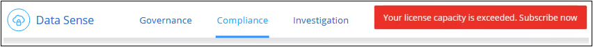

要求變更文件
要求變更文件 編輯此頁面
編輯此頁面 瞭解如何作出貢獻
瞭解如何作出貢獻設定Cloud Data Sense授權
Cloud Data Sense在Cloud Manager工作區中掃描的前1 TB資料是免費的。NetApp的BYOL授權或雲端供應商市場的Cloud Manager訂閱、必須在該點之後繼續掃描資料。
在閱讀更多內容之前、請先提供幾個附註：
-
如果您已在雲端供應商的市場訂閱Cloud Manager隨用隨付（PAYGO）、您也會自動訂閱Cloud Data Sense。您不需要再次訂閱。
-
Cloud Data Sense自帶授權（BYOL）是一個_浮 點型授權、您可以在您計畫掃描的工作環境和資料來源中使用。您會在Digital Wallet中看到使用中的訂閱內容。
使用Cloud Data Sense PAYGO訂閱
雲端供應商市場的隨用隨付訂閱可讓您授權使用Cloud Volumes ONTAP 多方面的系統及雲端資料服務、例如Cloud Data Sense。
您可以隨時訂閱、而且在資料量超過 1 TB 之前、將不會向您收取費用。您可以隨時從Data Sense儀表板查看要掃描的資料總量。而且「立即訂閱」按鈕可讓您在準備就緒時輕鬆訂閱。

這些步驟必須由擁有 Account Admin 角色的使用者完成。
-
在 Cloud Manager 主控台右上角、按一下「設定」圖示、然後選取 * 認證 * 。

-
尋找AWS執行個體設定檔、Azure託管服務身分識別或Google Project的認證資料。
訂閱必須新增至執行個體設定檔、託管服務識別或Google Project。否則無法充電。
如果您已經訂閱（如下所示）、就表示您已完成設定、沒有其他需要做的事。

-
如果您尚未訂閱、請將游標移至認證上方、按一下動作功能表、然後按一下*建立訂閱關聯*。

-
選取現有的訂閱、然後按一下「經銷」、或按一下「新增訂閱」、然後依照步驟進行。
下列影片說明如何建立關聯 "AWS Marketplace" 訂閱AWS訂閱：
下列影片說明如何建立關聯 "Azure Marketplace" 訂閱Azure：
下列影片說明如何建立關聯 "GCP 市場" 訂購GCP：
使用Cloud Data Sense BYOL授權
NetApp自帶授權、提供1年、2年或3年期限。BYOL * Cloud Data Sense *授權是浮點型授權、可讓您的*全部*工作環境和資料來源共享總容量、讓初始授權和續約更輕鬆。
如果您沒有Cloud Data Sense授權、請聯絡我們以購買：
-
mailto：ng-contact-data-sense@netapp.com？Subject =授權[傳送電子郵件以購買授權]。
-
按一下Cloud Manager右下角的聊天圖示以申請授權。
或者、如果Cloud Volumes ONTAP 您擁有不使用的未指派節點型支援、您可以將其轉換成具有相同金額等同和相同到期日的Cloud Data Sense授權。 "如需詳細資料、請前往此處"。
您可以使用Cloud Manager中的「Digital Wallet」頁面來管理Cloud Data Sense BYOL授權。您可以新增授權並更新現有授權。
取得Cloud Data Sense授權檔案
購買Cloud Data Sense授權後、您可以在Cloud Manager中輸入Cloud Data Sense序號和nss/帳戶、或上傳NLF授權檔案、以啟動授權。下列步驟說明如果您打算使用NLF授權檔案、該如何取得該檔案。
如果您已在內部部署站台的主機上部署Cloud Data Sense、但該站台無法存取網際網路、則必須從連線網際網路的系統取得授權檔案。無法使用序號和NSS帳戶啟動使用許可、進行暗色站台安裝。
-
登入 "NetApp 支援網站" 然後按一下*系統>軟體授權*。
-
輸入您的Cloud Data Sense授權序號。

-
在*授權金鑰*下、按一下*取得NetApp授權檔案*。
-
輸入您的Cloud Manager帳戶ID（在支援網站上稱為「租戶ID」）、然後按一下*提交*下載授權檔案。

您可以從Cloud Manager頂端選取* Account*下拉式清單、然後按一下帳戶旁的* Manage Account*、即可找到Cloud Manager帳戶ID。您的帳戶ID位於「總覽」索引標籤。
將Cloud Data Sense BYOL授權新增至您的帳戶
購買Cloud Manager帳戶的Cloud Data Sense授權後、您必須將授權新增至Cloud Manager、才能使用Data Sense服務。
-
在Cloud Manager左側導覽功能表中、按一下* Digital Wallet 、然後選取 Data Services Licenses*索引標籤。
-
按一下「 * 新增授權 * 」。
-
在_新增授權_對話方塊中、輸入授權資訊、然後按一下*新增授權*：
-
如果您擁有Data Sense授權序號並知道您的nss帳戶、請選取* Enter Serial Number*（輸入序號*）選項、然後輸入該資訊。
如果您的NetApp支援網站帳戶無法從下拉式清單取得、 "將新增至Cloud Manager的NSS帳戶"。
-
如果您有Data Sense授權檔案（安裝在暗處時需要）、請選取*上傳授權檔案*選項、然後依照提示附加檔案。

-
Cloud Manager會新增授權、讓您的Cloud Data Sense服務處於作用中狀態。
更新Cloud Data Sense BYOL授權
如果您的授權期限即將到期、或您的授權容量已達到上限、您將會收到Cloud Data傳感通知。

此狀態也會顯示在數位錢包中。

您可以在Cloud Data Sense授權到期之前更新、以確保存取掃描資料的能力不會中斷。
-
按一下Cloud Manager右下角的聊天圖示、即可針對特定序號、要求將您的術語或額外容量擴充至Cloud Data Sense授權。您也可以傳送電子郵件至mailto：ng-contact-data-sense@netapp.com®Subject=Licensing[寄送電子郵件要求更新授權]。
在您支付授權費用並向NetApp支援網站註冊之後、Cloud Manager會自動更新Digital Wallet中的授權、而Data Services授權頁面將會在5到10分鐘內反映變更。
-
如果Cloud Manager無法自動更新授權（例如、安裝在暗點）、則您需要手動上傳授權檔案。
-
您可以 從NetApp支援網站取得授權檔案。
-
在「資料服務授權」索引標籤的「數位錢包」頁面上、按一下
 如需您要更新的服務序號、請按一下*更新授權*。
如需您要更新的服務序號、請按一下*更新授權*。
-
在「更新授權」頁面上傳授權檔案、然後按一下「更新授權」。
-
Cloud Manager會更新授權、讓您的Cloud Data Sense服務持續運作。
BYOL 授權考量
使用Cloud Data Sense BYOL授權時、當您掃描的所有資料大小接近容量限制或接近授權到期日時、Cloud Manager會在Data Sense UI和Digital Wallet UI中顯示警告。您會收到下列警告：
-
當您正在掃描的資料量達到授權容量的80%時、當您達到限制時、也會再次顯示
-
授權到期前 30 天、授權到期後再一次
當您看到這些警告時、請使用Cloud Manager介面右下角的聊天圖示來續約授權。
如果授權過期、Data Sense會繼續執行、但儀表板的存取會遭到封鎖、因此您無法檢視任何掃描資料的相關資訊。如果您想減少所掃描的磁碟區數量、使容量使用量可能低於授權限制、則只有「_Configuration」頁面可用。
續約BYOL授權之後、Cloud Manager會自動更新Digital Wallet中的授權、並提供所有儀表板的完整存取權限。如果Cloud Manager無法透過安全的網際網路連線存取授權檔案（例如、安裝在暗點）、您可以自行取得該檔案、然後手動將其上傳至Cloud Manager。如需相關指示、請參閱 如何更新Cloud Data Sense授權。

|
如果您使用的帳戶同時擁有BYOL授權和PAYGO訂閱、則當BYOL授權到期時、Data Sense _will不會移轉至PAYGO訂閱。您必須續約BYOL授權。 |